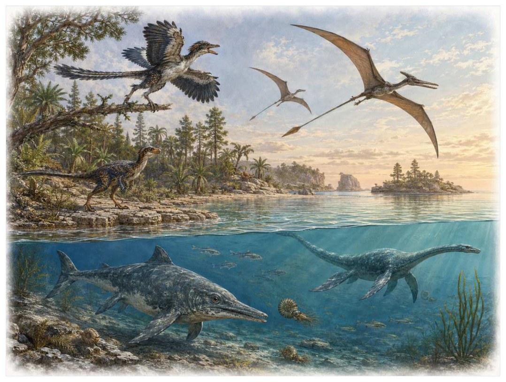
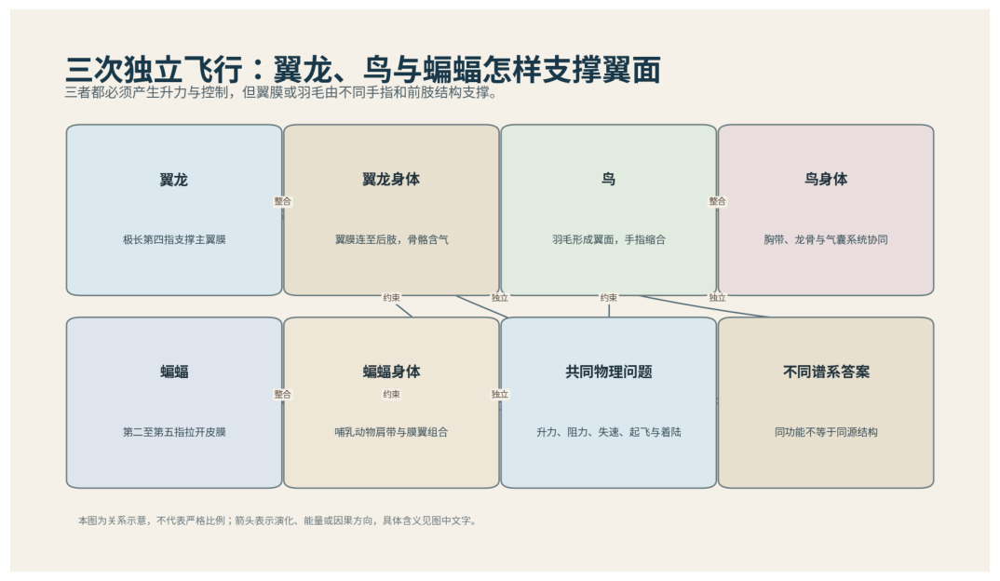

第13篇 · 白垩纪：羽毛、花与高度复杂的恐龙世界 · 第 47 章
翼龙的天空：从长尾小型飞行者到巨型神翼龙
本篇主题:白垩纪：羽毛、花与高度复杂的恐龙世界
被子植物扩张，昆虫关系网加密，恐龙与鸟类继续分化。

本章科学复原配图 （用于呈现结构与生态关系, 不替代化石照片、测量数据与系统发育证据。）
如果把演化树看作不断生长又不断被修剪的枝丛，晚三叠世至白垩纪末是其中关系重新布置的一段。翼龙是主龙类中的独立飞行支系，不是恐龙，也不是鸟的祖先。翼膜主要由极度延长的第四指支撑，内部有强化纤维和血管；身体覆盖称为焦鳞状纤维的结构，其中部分可能具有分枝。早期翼龙多长尾，后期翼手龙类缩短尾部、扩大头骨和翼展，进入海岸、湖泊、森林与陆地多种生态。
进入这个时代
若真正置身其中，首先感受到的是介质本身：水是否含氧、地面是否稳定、空气是否干燥、植被是否遮挡视线。身体结构只有放在这些条件中才有意义。海岸上，翼手龙类借海风滑翔并俯身取食鱼类；内陆平原上，神翼龙类用长颈和无牙长喙在地面搜寻小动物或腐肉。它们落地后以四肢行走，起飞很可能利用强壮前肢进行四足弹射，而不是像巨型鸟那样只靠后腿奔跑。
在“翼龙的天空：从长尾小型飞行者到巨型神翼龙”所覆盖的时间里，不能把地理与气候当作固定背景。海陆位置、海平面、河流或植被结构会改变资源可达性，同一性状在不同地区可能得到完全相反的选择结果。
以翼龙的天空：从长尾小型飞行者到巨型神翼龙为例，化石记录偏爱硬组织、快速埋藏和容易出露的岩层。一次“首次出现”通常只是目前所知的最早记录，一次“突然消失”也需要排除保存窗口关闭。年代、形态和环境证据必须一起解释。 在本章中，这一约束具体落在“膜翼允许连续翼面和形状调节”这条关系上。
再从晚三叠世至白垩纪末的时间尺度看，物种数量并不等于生态功能。一个群落即使仍有许多物种，只要初级生产、授粉、礁体建造或大型植食等关键功能消失，食物网也会表现为深度崩溃。反过来，少数机会型物种高丰度并不代表系统已经恢复。它与“延长第四指的膜翼”共同决定了后续变化可以沿哪些路径发生。

图 47-1 翼龙、鸟和蝙蝠的翼面由不同手指和膜结构支撑。
生态系统如何运转
在晚三叠世至白垩纪末，“膜翼允许连续翼面和形状调节”把环境条件转化为生物之间的差异。相同气候并不会平均影响所有支系，因为它们利用的食物、水层、底质和繁殖地点并不相同。
围绕“膜翼允许连续翼面和形状调节”，还要考虑空间异质性。一项在浅海、河谷或林冠有效的策略，移到深水、干旱内陆或开阔地便可能失去优势。因此同一支系常出现区域性扩张，而不是全球同步取代。 对翼龙的天空：从长尾小型飞行者到巨型神翼龙而言，这一后果还会与“前肢弹射把最强飞行肌同时用于起飞”相互放大或抵消。
本章的一条关键关系是“前肢弹射把最强飞行肌同时用于起飞”。它首先改变资源在个体之间的分配：能更早发现、处理或占据资源的种群获得收益，而另一方会承受新的选择压力。
围绕“前肢弹射把最强飞行肌同时用于起飞”，这一机制也会留下间接证据：咬痕、修复伤、足迹密度、粪化石、牙齿磨损和群落年龄结构分别记录不同环节。只有多种证据方向一致，行为解释才应上调可信度。 对翼龙的天空：从长尾小型飞行者到巨型神翼龙而言，这一后果还会与“喙、牙齿和颈部差异支撑多种摄食生态”相互放大或抵消。
“喙、牙齿和颈部差异支撑多种摄食生态”体现了生态系统的反馈性。一方结构或行为稍有改变，另一方的防御、逃避、繁殖和空间选择就会重新排列，长期累积后才形成宏观演化差异。
围绕“喙、牙齿和颈部差异支撑多种摄食生态”，从演化树看，相似关系可能在远亲中反复出现。功能相近不必意味着近缘，而同一祖先结构也可能被后代改作完全不同的用途；生态解释必须与系统发育互相校验。 对翼龙的天空：从长尾小型飞行者到巨型神翼龙而言，这一后果还会与“膜翼允许连续翼面和形状调节”相互放大或抵消。
关键演化创新
在“翼龙的天空：从长尾小型飞行者到巨型神翼龙”中，围绕“延长第四指的膜翼”，从共同选择角度看，“延长第四指的膜翼”可能先服务旧功能，后来才参与今天最熟悉的用途。把最终功能倒推成起源原因，会把演化误写成有目的的工程。 它首先需要在晚三叠世至白垩纪末的生态条件下产生可测量收益。
就“延长第四指的膜翼”而言，研究者通过近缘支系比较、发育同源、关节活动、微观组织和出现顺序重建这条路径。真正有价值的过渡化石不是“半成品”，而是证明中间组合可以独立生活。 本章把它与“四足行走与弹射起飞”并列，是为了显示复杂性状往往依赖多部分协同。
在“翼龙的天空：从长尾小型飞行者到巨型神翼龙”中，围绕“四足行走与弹射起飞”，讨论“四足行走与弹射起飞”时，最重要的问题是它解除哪一道限制。只要原有身体在运动、摄食、呼吸或繁殖上受约束，能够稍微缓解约束的变异就可能积累，最终产生看似跃迁的结果。 它首先需要在晚三叠世至白垩纪末的生态条件下产生可测量收益。
就“四足行走与弹射起飞”而言，它的成功具有条件性。环境稳定时，专门化可提高效率；危机到来时，同一专门化可能限制食物和栖息地选择。演化创新因此既能开启辐射，也能制造新的脆弱性。 本章把它与“骨骼气动化和巨大翼展”并列，是为了显示复杂性状往往依赖多部分协同。
在“翼龙的天空：从长尾小型飞行者到巨型神翼龙”中，围绕“骨骼气动化和巨大翼展”，从共同选择角度看，“骨骼气动化和巨大翼展”可能先服务旧功能，后来才参与今天最熟悉的用途。把最终功能倒推成起源原因，会把演化误写成有目的的工程。 它首先需要在晚三叠世至白垩纪末的生态条件下产生可测量收益。
就“骨骼气动化和巨大翼展”而言，这一变化还可能在多个支系中独立发生。若功能相似而解剖来源不同，就是趋同；若结构来自共同祖先但功能改变，则属于同源结构的分化。二者不能仅靠外观判断。 本章把它与“延长第四指的膜翼”并列，是为了显示复杂性状往往依赖多部分协同。
生命群像：把物种放回生态网络
喙嘴翼龙（Rhamphorhynchus muensteri）
在晚侏罗世，喙嘴翼龙（Rhamphorhynchus muensteri）以约翼展约1至2米的身体参与食物网。它不是孤立的“明星生物”，而是海岸和潟湖捕鱼翼龙；长尾末端菱形尾膜、针状牙和狭长翼构成早期翼龙型决定它能利用哪些资源，也决定必须承担哪些成本。
对喙嘴翼龙而言，同域物种的存在迫使它分割时间与空间。相似牙齿不一定吃完全相同的食物，相似四肢也可能适应不同底质；微磨损、同位素和伴生群落常能揭示这种细分。环境改变时，原本减少竞争的专门化又可能成为迁移和改食的障碍。 这使“长尾末端菱形尾膜、针状牙和狭长翼构成早期翼龙型”不能脱离其海岸和潟湖捕鱼翼龙角色来理解。
证据核心是胃内容物和喉部鱼残骸提供食性证据，是否水面掠食需谨慎。化石记录更擅长回答“结构是什么”，较难回答“每天怎样行动”。足迹、胃内容物、咬痕或胚胎若存在，会显著缩小推测范围；若只有零散骨骼，行为叙述就必须更克制。
由喙嘴翼龙这个案例看，它所代表的身体方案后来可能消失，也可能被远亲以不同材料重新发明。生命史因此既有可重复的功能解，也有不可复制的谱系路径。两者结合，才解释现代生物为何既熟悉又偶然。 它在晚侏罗世留下的记录，因此同时是第47章所讨论的形态史和生态史的一部分。
翼手龙（Pterodactylus antiquus）
认识翼手龙（Pterodactylus antiquus）要先放弃静态骨架印象。它生活在晚侏罗世，约翼展约1米，日常任务是作为小型海岸捕食者维持能量与繁殖。短尾、长掌骨和细长头骨代表翼手龙类身体重组只是这一整套生活史中最容易化石化的部分。
对翼手龙而言，它的成功不需要在所有性能上压倒其他物种，只需在特定资源和风险组合中留下更多后代。速度、咬合、装甲、感官与繁殖之间存在预算，某项性能极端化往往意味着另一项被牺牲。所谓“霸主”只是复杂权衡后的区域性结果。 这使“短尾、长掌骨和细长头骨代表翼手龙类身体重组”不能脱离其小型海岸捕食者角色来理解。
判断它的生活方式时，研究者首先使用索伦霍芬生长系列丰富，部分曾命名物种可能是不同年龄个体。随后会检验替代解释：同样的牙是否也能处理其他食物，同样的骨骼比例是否由年龄造成，同一骨层是否来自群体生活还是灾难性聚集。排除过程比贴标签更重要。
由翼手龙这个案例看，过去的复原常受完整现代动物模板影响，新材料则迫使研究者接受更陌生的身体比例或生活方式。最稳妥的表达是保留估计区间，并明确哪些软组织、颜色和社会行为仍属合理推测。 它在晚侏罗世留下的记录，因此同时是第47章所讨论的形态史和生态史的一部分。
无齿翼龙（Pteranodon longiceps）
无齿翼龙（Pteranodon longiceps）生活在晚白垩世，已知体型约为翼展常约5至7米。它在群落中的角色可概括为远岸海洋捕鱼与滑翔者。最值得观察的结构是无牙长喙和大型头冠适应高效飞行与显示。这些结构不是为了后来时代而准备，而是在当时直接影响摄食、运动、防御或繁殖。
对无齿翼龙而言，从种群角度看，偶发捕猎和个体伤病远不如长期繁殖率重要。广泛分布的普通个体比一具异常巨大的标本更能代表支系，然而普通个体往往较少进入公众叙事。研究者必须防止把化石收藏偏好误当成古代丰度。 这使“无牙长喙和大型头冠适应高效飞行与显示”不能脱离其远岸海洋捕鱼与滑翔者角色来理解。
关于它的直接依据是：大量个体显示体型二型，性别解释较有支持但仍需谨慎。研究者还必须确认骨骼是否属于同一个体、是否被水流搬运、压扁是否改变比例，以及不同大小是否只是成长阶段。只有解剖、地层和功能证据相互一致，复原才可上调为高可信。
由无齿翼龙这个案例看，它在生命史中的价值不在于离现代形态还有多远，而在于证明这一身体组合曾真实可行。即使没有直系后代，支系也可能在当时持续繁盛，并通过捕食、植食或栖息地工程改变其他生命的选择环境。 它在晚白垩世留下的记录，因此同时是第47章所讨论的形态史和生态史的一部分。
风神翼龙（Quetzalcoatlus northropi）
在这一章的生命群像里，风神翼龙（Quetzalcoatlus northropi）不能只当作图鉴名称。它出现于晚白垩世末，体型大约翼展约10米级，主要生活方式是大型陆地搜猎或机会性食腐者；极长颈、长喙、气动骨和强壮前肢支持巨型飞行则说明身体怎样围绕这一生活方式进行组合。
对风神翼龙而言，把它放回群落后，结构的意义更清楚。食物并不会平均分布，水深、植被高度、底质和季节把资源切成小块；它的身体让其中一部分资源可被利用，也使它与近缘种错开生态位。种群命运还取决于幼体能否成长、繁殖地点是否稳定以及灾害后是否仍有避难所。 这使“极长颈、长喙、气动骨和强壮前肢支持巨型飞行”不能脱离其大型陆地搜猎或机会性食腐者角色来理解。
现有认识建立在大种材料不完整，较小近亲帮助复原；四足弹射是主流力学模型之上。古生物学的可信度不是来自一件戏剧化标本，而是来自多件标本、多个地点和不同方法得到相容结果。新发现若改变比例或分类，并非此前研究毫无价值，而是证据边界被重新画清。
由风神翼龙这个案例看，从生态尺度看，它与本章其他成员共同维持一张网络。任何“最强”排名都会遗漏资源供应、幼体死亡、疾病和气候脉冲；真正决定长期成功的是种群能否在波动中不断完成繁殖。 它在晚白垩世末留下的记录，因此同时是第47章所讨论的形态史和生态史的一部分。
古魔翼龙（Tupandactylus imperator）
从外形看，古魔翼龙（Tupandactylus imperator）最容易被记住的是巨大软硬复合头冠显示视觉展示极端化。它生活在早白垩世，大小约翼展约3至4米，承担可能取食果实、种子或小动物的内陆翼龙这一生态功能。把年代、体型和功能放在一起，才能避免把奇特形态当成无意义装饰。
对古魔翼龙而言，同域物种的存在迫使它分割时间与空间。相似牙齿不一定吃完全相同的食物，相似四肢也可能适应不同底质；微磨损、同位素和伴生群落常能揭示这种细分。环境改变时，原本减少竞争的专门化又可能成为迁移和改食的障碍。 这使“巨大软硬复合头冠显示视觉展示极端化”不能脱离其可能取食果实、种子或小动物的内陆翼龙角色来理解。
支持该解释的材料包括头冠软组织有直接保存，食性仍主要由喙形和环境推断。若不同证据出现冲突，应优先报告范围而不是强行给出单值。例如体长会随参照类群变化，运动能力会随软组织假设变化，系统位置也会随新增性状重新计算。
由古魔翼龙这个案例看，它也展示专门化的双面性：结构在稳定环境中提高效率，却可能在气候、食物或竞争格局突变时限制转向。灭绝不是对设计的道德评分，而是性状、地理范围和偶然事件相遇后的历史结果。 它在早白垩世留下的记录，因此同时是第47章所讨论的形态史和生态史的一部分。
因果链：环境、生态与性状
亲缘关系为功能解释设定边界。“骨骼气动化和巨大翼展”若在近缘支系中以不同程度出现，最简解释通常是祖先已具备部分结构，后代分别强化或丢失；若远亲在相似生态位中出现相近功能，则需要检查内部解剖是否来自不同材料。喙嘴翼龙与无齿翼龙可用于演示这一区分：外形近似不自动证明近缘，外形差异也不否定深层同源。把系统发育树、年代和生态证据叠在一起，才能判断翼龙的天空：从长尾小型飞行者到巨型神翼龙中的相似究竟来自共同继承、趋同还是保留的原始特征。
从资源入口看，“膜翼允许连续翼面和形状调节”决定能量首先由谁获得，而“前肢弹射把最强飞行肌同时用于起飞”决定能量随后怎样在群落中转移。只有当个体能够借助“延长第四指的膜翼”把资源转化为生长或后代时，形态优势才会成为种群优势。喙嘴翼龙与翼手龙分别展示了这条链上的不同位置：前者的长尾末端菱形尾膜、针状牙和狭长翼构成早期翼龙型使其偏向海岸和潟湖捕鱼翼龙，后者的短尾、长掌骨和细长头骨代表翼手龙类身体重组则服务于小型海岸捕食者。这并不意味着二者必然直接竞争；更常见的情况是，它们通过共享资源、改变栖息地或影响共同捕食者而间接连接。把这种间接作用纳入，才看得见翼龙的天空：从长尾小型飞行者到巨型神翼龙不是物种名单，而是一张持续重新分配能量的网络。
“喙、牙齿和颈部差异支撑多种摄食生态”说明环境不是在所有个体身上平均施力。若一个种群分布广、世代较短或能使用多种资源，它可能把一次局部危机吸收到地理和生活史差异之中；若另一个种群依赖狭窄水深、单一植物或特定繁殖场，平时高效的专门化就可能在变化中放大风险。翼手龙和无齿翼龙的差异可以用来提出这种比较，但不能仅凭外形宣布谁更适应。真正需要的是地层连续性、地区分布、年龄结构和伴生群落共同告诉我们，哪些性状在翼龙的天空：从长尾小型飞行者到巨型神翼龙的具体条件下转化成了更稳定的繁殖。
如果把翼龙的天空：从长尾小型飞行者到巨型神翼龙当作一次自然实验，可以追问：假如“膜翼允许连续翼面和形状调节”较弱，“四足行走与弹射起飞”是否仍会带来同样收益；假如“前肢弹射把最强飞行肌同时用于起飞”更强，喙嘴翼龙的长尾末端菱形尾膜、针状牙和狭长翼构成早期翼龙型是否反而成为负担。反事实无法直接验证，却能帮助研究者识别模型隐含的因果假设。随后再用软组织翼膜和纤维保存和足迹证明四足步态寻找可区分的预测：不同机制应在体型分布、损伤类型、沉积环境或出现顺序上留下不同痕迹。科学解释不是为现有图景编一个顺耳故事，而是让相互竞争的解释接受同一批材料检验。
“膜翼允许连续翼面和形状调节”与“喙、牙齿和颈部差异支撑多种摄食生态”之间常存在反馈。一个支系改变沉积、植被或猎物数量后，环境会对其自身和其他支系产生新的选择压力；短期收益可能导致长期资源下降，局部工程行为也可能创造此前不存在的栖息地。喙嘴翼龙作为海岸和潟湖捕鱼翼龙，无齿翼龙作为远岸海洋捕鱼与滑翔者，即使从不直接相遇，也可能经由这种环境改造联系起来。生态系统因此不是静态背景上的竞赛场，而是参与者不断修改规则的动态结构；这正是解释翼龙的天空：从长尾小型飞行者到巨型神翼龙为何会留下长期后果的关键。
时代横截面：个体、种群与证据
把喙嘴翼龙与翼手龙并排观察，可以看到同一时代并不存在唯一正确的身体方案。喙嘴翼龙以长尾末端菱形尾膜、针状牙和狭长翼构成早期翼龙型参与海岸和潟湖捕鱼翼龙，翼手龙则依靠短尾、长掌骨和细长头骨代表翼手龙类身体重组承担小型海岸捕食者；两者可能在食物尺寸、活动空间或时间上错开，从而降低直接竞争。若环境改变使这些维度重新重叠，原先共存的支系才可能发生更强替代。比较的目的不是判断谁更先进，而是识别每套结构在哪些条件下有效、在哪些条件下暴露成本。
尺度转换是翼龙的天空：从长尾小型飞行者到巨型神翼龙最容易被忽略的问题。喙嘴翼龙的一次摄食、一次移动或一次繁殖属于分钟到季节尺度；种群扩张需要数百至数万年；“延长第四指的膜翼”在演化树上的固定则可能跨越更久。短期观察能够说明结构怎样工作，却不能单独解释支系为何在晚三叠世至白垩纪末扩张。反之，宏观多样性曲线能显示替换，却不能指出每次选择发生在什么身体和生活阶段。把尺度接起来，因果链才完整。
从失败的替代解释出发，能够看见研究如何推进。若把喙嘴翼龙简单解释为海岸和潟湖捕鱼翼龙，就应检查其长尾末端菱形尾膜、针状牙和狭长翼构成早期翼龙型是否真的适合该功能；若另一种功能同样可行，再看磨损、同位素、沉积环境或共存生物能否区分。翼手龙与无齿翼龙提供了比较基线，帮助判断某一结构是普遍祖征、特殊适应还是成长阶段差异。结论不是从外观直觉跳出，而是在一系列被排除的可能性之后留下。
本章还可以作为灭绝选择性的预演。若危机首先削弱“膜翼允许连续翼面和形状调节”，依赖该环节的喙嘴翼龙可能比外形更脆弱但食物广泛的翼手龙更早衰退；若危机破坏的是繁殖场或幼体环境，成年体型和武器几乎不能提供保护。分布范围、成熟速度、休眠能力与食谱因此要和长尾末端菱形尾膜、针状牙和狭长翼构成早期翼龙型、短尾、长掌骨和细长头骨代表翼手龙类身体重组等显眼结构一起评估。危机筛选的是整套生活史，而不是单项竞技能力。
从保存角度看，喙嘴翼龙和翼手龙也可能被化石记录不公平地对待。喙嘴翼龙的长尾末端菱形尾膜、针状牙和狭长翼构成早期翼龙型若包含坚硬、容易辨认的部分，就更可能被采集和命名；翼手龙若身体柔软、个体小或生活在侵蚀环境，真实丰度可能被严重低估。软组织翼膜和纤维保存能补充一部分信息，足迹证明四足步态又提供另一尺度的限制。只有先问“什么容易被保存”，再问“什么当时常见”，才不会把博物馆展柜的比例误当成古生态比例。
科学家为什么这样判断
围绕“软组织翼膜和纤维保存”，高可信结论通常来自独立方法一致。例如形态暗示某种食性时，微磨损、同位素或胃内容物若给出相同方向，解释便更稳固；若结果冲突，就应保留生态弹性或地区差异。
证据条目“足迹证明四足步态”的作用，是把肉眼可见的化石转化为可检验结论。研究者先确认样品的层位和成岩历史，再测量结构、比较近缘种并建立替代模型；若解释只在一套参数下成立，就不能写成唯一事实。
使用“骨骼截面与飞行模型估算载荷和起飞”时必须处理保存偏差。坚硬组织、低氧埋藏和火山灰覆盖更容易留下记录，岩层出露与采集历史又决定样本数量。统计分析通常要校正这些不均匀性，避免把采样强度当作真实多样性。
在“翼龙的天空：从长尾小型飞行者到巨型神翼龙”这一问题上，把上述方法合在一起，研究者才能从残缺材料走向受约束的复原。任何一条证据都可能受到成岩、污染、样本量或现代类比的限制；结论越具体，越需要多条独立证据指向同一方向，并与晚三叠世至白垩纪末的地层背景相容。
过去的图景与今天的证据
风神翼龙的翼展常估约10米级，但质量、起飞方式和是否长距离远洋飞行取决于模型。‘像秃鹫盘旋食腐’与‘像巨型鹳在地面猎食’并非完全互斥，不过颈部、喙和足迹更支持许多神翼龙类在陆地积极觅食。翼龙是否具真正羽毛的术语与同源性仍有争论。
围绕“翼龙的天空：从长尾小型飞行者到巨型神翼龙”，争议持续还因为不同问题需要不同尺度。个体生物力学、种群生态和全球气候模型无法互相替代；一个模型能解释骨骼受力，不等于已经解释整个支系为何扩张或灭绝。
对晚三叠世至白垩纪末的材料而言，需要特别警惕新闻标题把“可能”“支持”改写成“已经证明”。古生物学很少能直接观察行为，越接近颜色、叫声、群居和捕猎策略，越应说明样本数量与替代解释。
跨尺度观察
生态工程：生物不是被动放在环境里。根系、礁体、洞穴、粪便和迁徙都会改变水流、土壤、养分与栖息地结构。工程效应一旦扩散，后续物种面对的环境已经是前一批生命共同建造的。 在“翼龙的天空：从长尾小型飞行者到巨型神翼龙”中，这一尺度具体连接了“膜翼允许连续翼面和形状调节”与“延长第四指的膜翼”，因而不能只从单个成年标本判断。
发育约束：自然选择修改的是已有胚胎程序。骨骼顺序、身体轴线和组织材料限制可出现的变化，所以远亲面对同一问题时会以不同部件实现相似功能。过渡化石的镶嵌特征正是发育模块可部分独立变化的结果。 在“翼龙的天空：从长尾小型飞行者到巨型神翼龙”中，这一尺度具体连接了“前肢弹射把最强飞行肌同时用于起飞”与“四足行走与弹射起飞”，因而不能只从单个成年标本判断。
灭绝选择性：危机不会随机删除名单。分布狭窄、食性单一、体型大、成熟慢或依赖特定栖息地的支系往往风险更高，但每次事件的杀伤机制不同，规律只能作为概率而非绝对法则。 在“翼龙的天空：从长尾小型飞行者到巨型神翼龙”中，这一尺度具体连接了“喙、牙齿和颈部差异支撑多种摄食生态”与“骨骼气动化和巨大翼展”，因而不能只从单个成年标本判断。
通向下一个时代
从本章走向下一阶段时，需要保留的不是一串物种名，而是一个因果链：环境改变可用能量与栖息地，生态关系筛选性状，性状又反过来改造环境。翼龙与鸟类在白垩纪长期共存，说明鸟并非简单淘汰翼龙。两者在体型和生态位上有分割，末期大型翼龙仍高度成功，最终与非鸟恐龙一起在K-Pg危机中消失。
本章精选来源
- [R68] Xu, X. et al. An integrative approach to understanding bird origins. Science 346, 1253293 (2014).
- [R76] Luo, Z.-X. Transformation and diversification in early mammal evolution. Nature 450, 1011-1019 (2007).
- [R77] Meng, J. Mesozoic mammals of China: implications for phylogeny and early evolution of mammals. National Science Review 1, 521-542 (2014).
- [R78] Luo, Z.-X. et al. Evolutionary development in basal mammaliaforms as revealed by a docodontan. Science 347, 760-764 (2015).
- [R79] Grossnickle, D. M., Smith, S. M. & Wilson, G. P. Untangling the multiple ecological radiations of early mammals. Trends in Ecology & Evolution 34, 936-949 (2019).